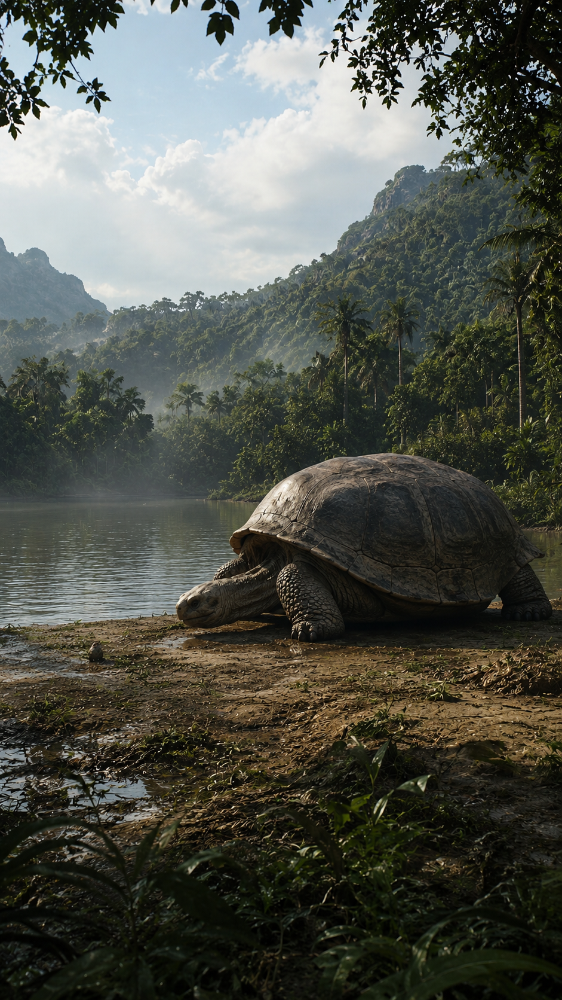
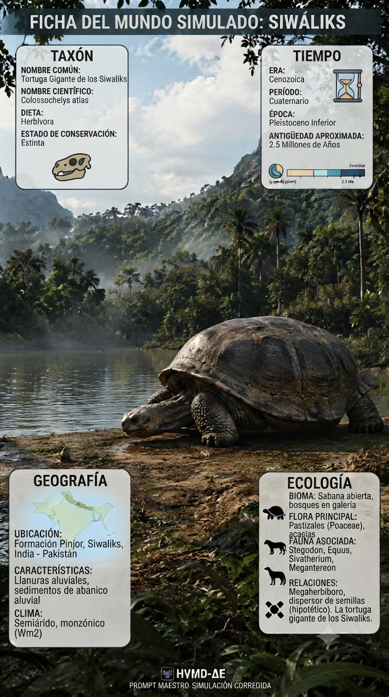
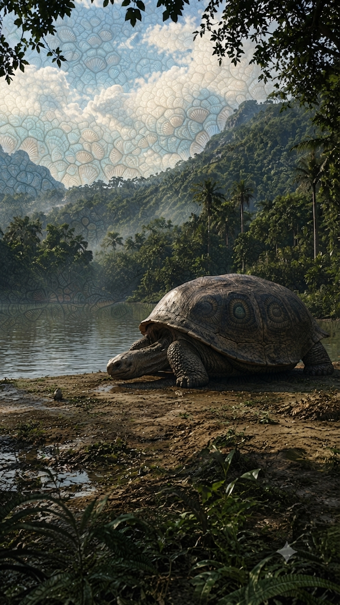

Paleoficha de PalEntropía



TAXÓN:
Colossochelys atlas
CLADO:
Testudinidae (Cryptodira)
DIETA:
Herbívoro (ramoneador de baja altura; consumo de vegetación herbácea y frutos caídos)
TAMAÑO:
Caparazón superior a 2,5 metros de longitud y masa estimada superior a 1.000 kg.
LOCOMOCIÓN:
Terrestre; extremidades columnares muy robustas adaptadas para soportar un enorme peso corporal.
TIEMPO:
Plioceno Superior – Pleistoceno Inferior (aprox. 3,0–0,1 Ma).
GEOGRAFÍA:
Formaciones Siwalik, subcontinente indio.
EQUIVALENCIA PALEOGEOGRÁFICA:
Ecosistemas de sabana tropical y bosques abiertos sometidos a ciclos monzónicos.
AMBIENTE PALEAOECOLÓGICO:
Llanuras aluviales muy productivas con marcada estacionalidad hídrica.
ECOLOGÍA:
• Flora: Pastizales, bosques de ribera y vegetación xerófila adaptada a los ciclos del monzón.
• Fauna secundaria: Proboscídeos gigantes, jiráfidos arcaicos y otros grandes herbívoros del subcontinente indio.
• Nichos: Megaherbívoro de baja altura especializado en vegetación herbácea y frutos caídos, explotando recursos poco accesibles para otros gigantes.
• Relaciones: Los adultos apenas sufrían depredación gracias a su enorme tamaño y a la protección de su gigantesco caparazón.
CLIMA:
Wm12 (Monzónico estacional). Clima cálido con alternancia entre estaciones lluviosas y secas que condicionaban la disponibilidad de alimento.
ESTADO ECOLÓGICO:
Estable. Representa el punto culminante del gigantismo en las tortugas terrestres, dominando los ecosistemas de los Siwalik antes de las glaciaciones del Pleistoceno.